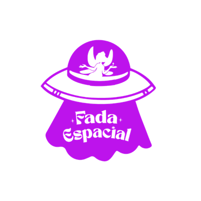
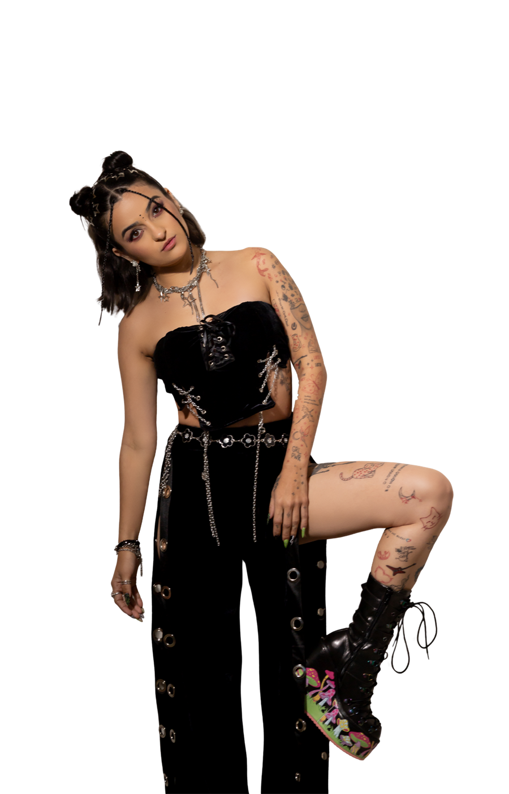
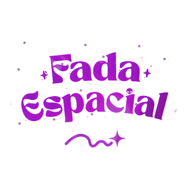

Entre fadas, bruxas e sereias, universos se entrelaçam para dar vida a infinitas expressões de ser.

MAMALIVRE

by fada espacialCada retalho
tem voz
Quatro caminhos dentro do universo da fada. Nenhuma peça sai igual à outra.

Isadora SchwartzQuem costura o universo
A Fada Espacial, criada por Isadora Schwartz, é mais do que uma marca, é um universo onde imaginação, identidade e liberdade se encontram. A marca nasce dando vida a looks únicos, feitos sob medida, que vão além de raves e festivais.
Aqui, cada retalho tem voz e cada costura carrega uma intenção. Acreditamos no poder da transformação através do upcycling e na magia da criação freestyle, onde nenhuma peça é igual à outra e cada criação carrega sua própria história astral.
O processo, sem letra miúda

Sua peça
ainda não existe
Escolha um look, adapte cor e tecido ou mande suas inspirações. O resto nasce em freestyle.